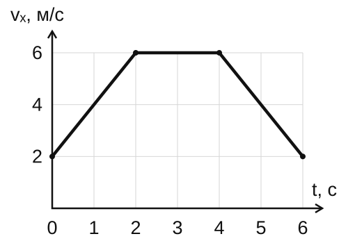
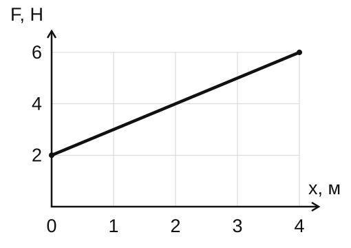
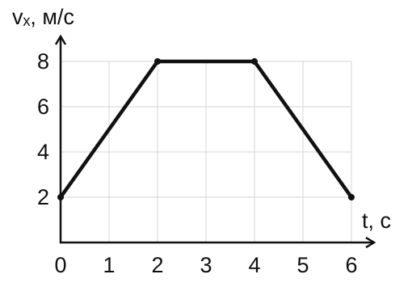
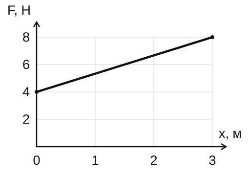

Контрольная работа по теме «Кинематика. Динамика. Законы сохранения в механике»
Вариант 1
1. Кинематика — 1 балл
На рисунке показана зависимость проекции скорости тела от времени. Определите проекцию ускорения на участке от 4 до 6 с. Ответ запишите в м/с² с учётом знака. Этот же график используется в задании 6.

2. Вес тела — 1 балл
Человек массой 40 кг стоит на горизонтальном полу лифта, который движется с ускорением \(2\text{ м/с}^2\), направленным вертикально вверх. Найдите вес человека. Другие вертикальные силы, кроме тяжести и реакции пола, на человека не действуют. Ответ запишите в ньютонах.
3. Импульс — 1 балл
Тележка массой 2 кг движется со скоростью 3 м/с и сталкивается с неподвижной тележкой массой 1 кг. Тележки сцепляются. Найдите скорость их совместного движения сразу после столкновения. Движение прямолинейное и горизонтальное; импульсом внешних горизонтальных сил за время столкновения пренебрегите. Ответ запишите в м/с.
4. Работа силы — 1 балл
Тело перемещается вдоль положительного направления оси \(Ox\). Приложенная к нему сила также направлена вдоль положительного направления этой оси, а её модуль зависит от координаты так, как показано на рисунке. Найдите работу этой силы при перемещении тела от \(x=0\) до \(x=4\) м. Ответ запишите в джоулях.

5. Изменение величин — 2 балла
К лёгкой горизонтальной пружине, другой конец которой закреплён, прикрепили брусок. Пружину сжали на некоторую величину и отпустили брусок без начальной скорости. Поверхность гладкая, деформация пружины упругая. Опыт повторили с бруском вдвое большей массы, сохранив жёсткость и первоначальное сжатие пружины.
Как изменились по сравнению с первым опытом:
- А) модуль ускорения бруска сразу после отпускания;
- Б) скорость бруска при первом прохождении положения, в котором пружина не деформирована?
Для каждой величины выберите: 1 — увеличилась; 2 — уменьшилась; 3 — не изменилась. Запишите две цифры в порядке АБ. Цифры могут повторяться.
6. Анализ движения — 2 балла
Используя график задания 1, выберите все верные утверждения. Масса тела постоянна.
- На участке от 0 до 2 с проекция ускорения равна \(2\text{ м/с}^2\).
- Равномерное движение длится 3 с.
- За время от 0 до 6 с тело проходит путь 28 м.
- На участке от 4 до 6 с кинетическая энергия тела уменьшается.
- В момент времени 6 с тело движется против положительного направления оси \(Ox\).
Запишите номера выбранных утверждений в порядке возрастания.
7. Движение по наклонной плоскости — 3 балла
Брусок массой 2 кг отпускают без начальной скорости на наклонной плоскости. Синус угла её наклона равен 0,60, косинус — 0,80. Коэффициент трения скольжения равен 0,25; коэффициент трения покоя можно считать таким же. Брусок скользит вниз, не вращаясь. Плоскость достаточно длинная.
Найдите ускорение бруска и путь за первые 2 с движения. Сделайте рисунок с силами и запишите второй закон Ньютона в проекциях на оси, направленные вдоль плоскости и перпендикулярно ей.
8. Столкновение и торможение — 3 балла
Пластилиновый шарик массой 0,10 кг летит горизонтально со скоростью 20 м/с и попадает в покоящийся брусок массой 0,90 кг. Шарик прилипает к бруску. Удар центральный; после него брусок с шариком движется поступательно по горизонтальной поверхности. Коэффициент трения скольжения равен 0,10. Время удара настолько мало, что импульсом силы трения за это время можно пренебречь.
Найдите скорость бруска с шариком сразу после удара и путь до полной остановки. Объясните, на каком этапе можно использовать закон сохранения импульса и как учитывается трение на последующем участке.
Вариант 2
1. Кинематика — 1 балл
На рисунке показана зависимость проекции скорости тела от времени. Определите проекцию ускорения на участке от 4 до 6 с. Ответ запишите в м/с² с учётом знака. Этот же график используется в задании 6.

2. Вес тела — 1 балл
Человек массой 50 кг стоит на горизонтальном полу лифта, который движется с ускорением \(2\text{ м/с}^2\), направленным вертикально вниз. Найдите вес человека. Другие вертикальные силы, кроме тяжести и реакции пола, на человека не действуют. Ответ запишите в ньютонах.
3. Импульс — 1 балл
Тележка массой 3 кг движется со скоростью 4 м/с и сталкивается с неподвижной тележкой массой 1 кг. Тележки сцепляются. Найдите скорость их совместного движения сразу после столкновения. Движение прямолинейное и горизонтальное; импульсом внешних горизонтальных сил за время столкновения пренебрегите. Ответ запишите в м/с.
4. Работа силы — 1 балл
Тело перемещается вдоль положительного направления оси \(Ox\). Приложенная к нему сила также направлена вдоль положительного направления этой оси, а её модуль зависит от координаты так, как показано на рисунке. Найдите работу этой силы при перемещении тела от \(x=0\) до \(x=3\) м. Ответ запишите в джоулях.

5. Изменение величин — 2 балла
К лёгкой горизонтальной пружине, другой конец которой закреплён, прикрепили брусок. Пружину сжали на некоторую величину и отпустили брусок без начальной скорости. Поверхность гладкая, деформация пружины упругая. Опыт повторили с вдвое большим первоначальным сжатием пружины, сохранив массу бруска и жёсткость пружины.
Как изменились по сравнению с первым опытом:
- А) модуль ускорения бруска сразу после отпускания;
- Б) скорость бруска при первом прохождении положения, в котором пружина не деформирована?
Для каждой величины выберите: 1 — увеличилась; 2 — уменьшилась; 3 — не изменилась. Запишите две цифры в порядке АБ. Цифры могут повторяться.
6. Анализ движения — 2 балла
Используя график задания 1, выберите все верные утверждения. Масса тела постоянна.
- На участке от 0 до 2 с проекция ускорения равна \(2\text{ м/с}^2\).
- Равномерное движение длится 2 с.
- За время от 0 до 6 с тело проходит путь 36 м.
- В момент времени 6 с тело неподвижно.
- На участке от 4 до 6 с проекция равнодействующей сил на ось \(Ox\) отрицательна.
Запишите номера выбранных утверждений в порядке возрастания.
7. Движение по наклонной плоскости — 3 балла
Брусок массой 3 кг отпускают без начальной скорости на наклонной плоскости. Синус угла её наклона равен 0,80, косинус — 0,60. Коэффициент трения скольжения равен 0,50; коэффициент трения покоя можно считать таким же. Брусок скользит вниз, не вращаясь. Плоскость достаточно длинная.
Найдите ускорение бруска и путь за первые 2 с движения. Сделайте рисунок с силами и запишите второй закон Ньютона в проекциях на оси, направленные вдоль плоскости и перпендикулярно ей.
8. Столкновение и торможение — 3 балла
Пластилиновый шарик массой 0,20 кг летит горизонтально со скоростью 15 м/с и попадает в покоящийся брусок массой 0,80 кг. Шарик прилипает к бруску. Удар центральный; после него брусок с шариком движется поступательно по горизонтальной поверхности. Коэффициент трения скольжения равен 0,15. Время удара настолько мало, что импульсом силы трения за это время можно пренебречь.
Найдите скорость бруска с шариком сразу после удара и путь до полной остановки. Объясните, на каком этапе можно использовать закон сохранения импульса и как учитывается трение на последующем участке.